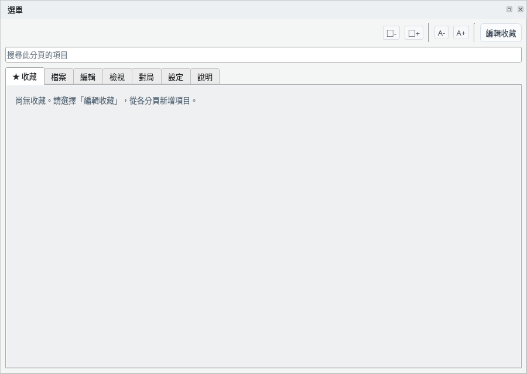
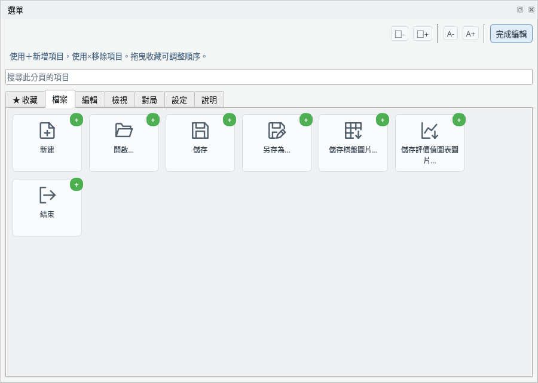
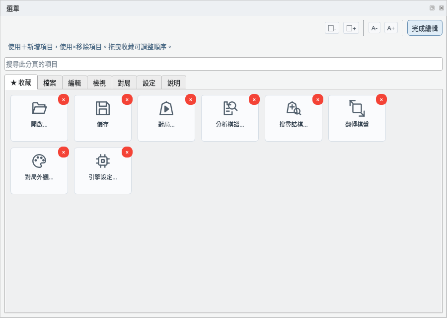
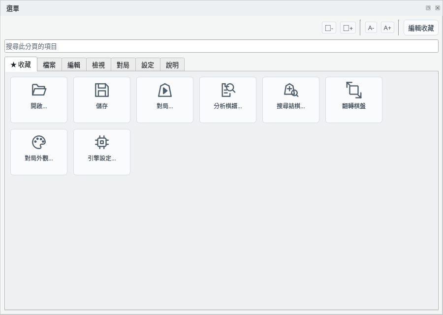

在選單面板中快速執行各種操作
截圖於 Linux 上以繁體中文介面擷取。
把常用功能匯集到收藏中，快速使用
「★ 收藏」分頁中顯示已新增的項目。最初沒有新增任何項目，只顯示提示。

收藏分頁：未新增的狀態
按一下右上角的「編輯收藏」開始編輯，按鈕會變為「完成編輯」。各分頁項目的右上角會顯示綠色的「+」，按一下即可把該項目新增到收藏。

編輯收藏：以「+」新增
編輯期間開啟收藏分頁，已新增項目的右上角會顯示紅色的「×」，按一下即可從收藏中移除。拖曳項目可以調整順序。完成後按一下「完成編輯」。

編輯收藏：以「×」移除，拖曳調整順序
新增的項目會匯集在「★ 收藏」分頁中。新增常用功能後，不需切換分頁即可使用。

新增的項目顯示在收藏分頁中